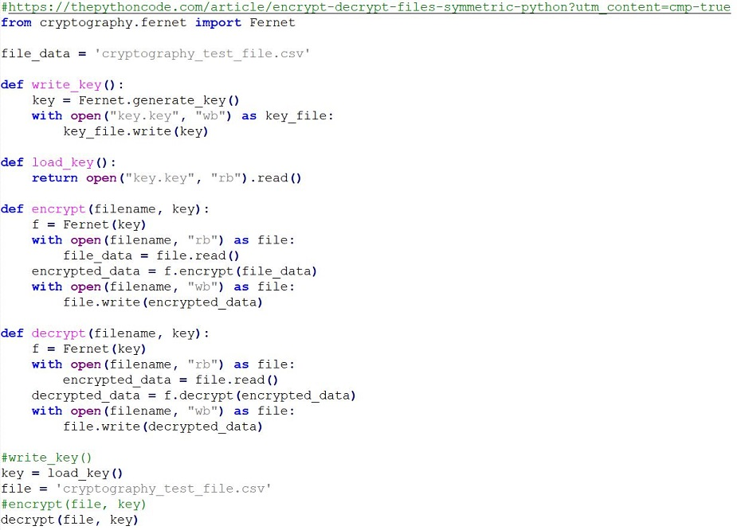
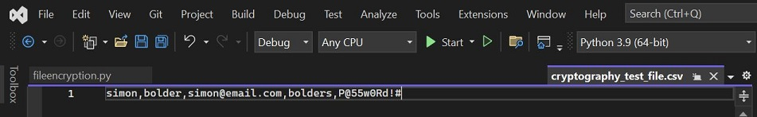
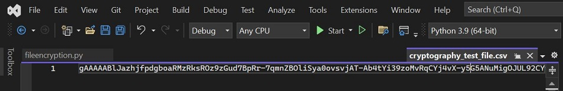

Cryptography
The exercise was to create a python program using a cryptography algorithim to encrypt and decrypt a text file.
Question 1
Why did you select the algorithm you chose? I chose to implement this code using the Fernet python library and using symmetric encryption on top of an AES algorithim. For the purposes of the code the use of symmetric encryption proved to be a more practical way of encryption by utilising the same key for both encryption and decryption. The choice however of using AES encryption was based on its inclusion in the ISO/IEC 18033-3 standard. Additionally it is the only public accessible cipher approved by the U.S. National Security Agency (NSA).
Question 2
Would it meet the GDPR regulations? Depndent on which GDPR model you are using (UK, EU or indeed other global data protection standards) it appears that the algorithim does meet GDPR regulations. The Data Protection Act 2018 and the General Data Protection Regulation (GDPR) states that information must is used fairly, lawfully and transparently. With the correct development the use of the Fernet cryptography and the full encryption of file and contents meets this. While not dealing with specific pieces of data in the file but encrypting the whole file there is less risk of other Personal Identifiable Data (PID) within the file been exposed. Full data could be encrypted at rest and only decrypted for the purposes of read or write transactions by back end code. There are other standards, algorithims and ciphers avaialable that organisations would prefer to use from a security perspective. There is a dependency here on risk, cost, human factors and the criticality of data when developing software and the data protection principles to be applied.
Source Code
Decrypted File
Encrypted File
References:
Junestam, A. and Guigo, N. (2014) Open Crypto Audit Project TrueCrypt.
Cryptography with Python. Available from: https://www.tutorialspoint.com/cryptography_with_python/cryptography_with_python_quick_guide.htm [Accessed 30 September 2023].
How to Encrypt and Decrypt Files in Python. Available from: https://thepythoncode.com/article/encrypt-decrypt-files-symmetric-python?utm_content=cmp-true [Accessed 30 September 2023].
Collaborative discussion - Initial Post
The assumption that TrueCrypt is not secure is well supported and proven by Junestam and Guigo (2014) in their cryptanalysis report. The 11 identified vulnerabilities are components of any secure piece of software. Whilst the report does not identify high severity risks the 4 medium risks identified include cryptography, data exposure and validation which can all be considered significant. In regards to cryptography and the key encryption the limitation of TrueCrypt's functions in hashing credentials exposes the software to brute force attacks. The solutions offered to this include configuration to support advances in GPU and CPU but this still does not resolve the restrictive nature of the function. Furthermore, by adding additional key derivation functions in a longer term solution would require the software to be maintained but would also require investment in hardware resources. Additionally, the medium data risks in TrueCrypt have limitations on their functions to handle inputs, arrays and arguments for data validation as well as exposing data to be surfaced to non-encrypted volumes. These risks alone combined with the support and maintainability for TrueCrypt and much of it's redundant and deprecated technology does make it an insecure piece of software in the modern computer science domain.
In relation to the question of would i recommend TrueCrypt as a secure storage environment to a friend or potentially an organisation, I would refer to the points written above. The findings by Junestam and Guigo (2014) offer many recommendations in regards to code quality, deprecated functions, inconsistent variable types as well as weaknesses in integrity checks and ciphers. In addition to the lack of maintainability the recommendations by the authors also point to outdated build tools and packages that are hard to source from trustworthy providers. As well as significant investment in source code and standards this analysis would make me reluctant to recommend to a friend or organisation. I would consider the software to be to high of a risk with a lack of clear mitigation for issues, maintainability and supportability.
References:
Junestam, A. & Guido, N. (2014) Open Crypto Audit Project TrueCrypt: Cryptographic Review. Available from: https://opencryptoaudit.org/reports/TrueCrypt_Phase_II_NCC_OCAP_final.pdf [Accessed 30 Sep 2023].